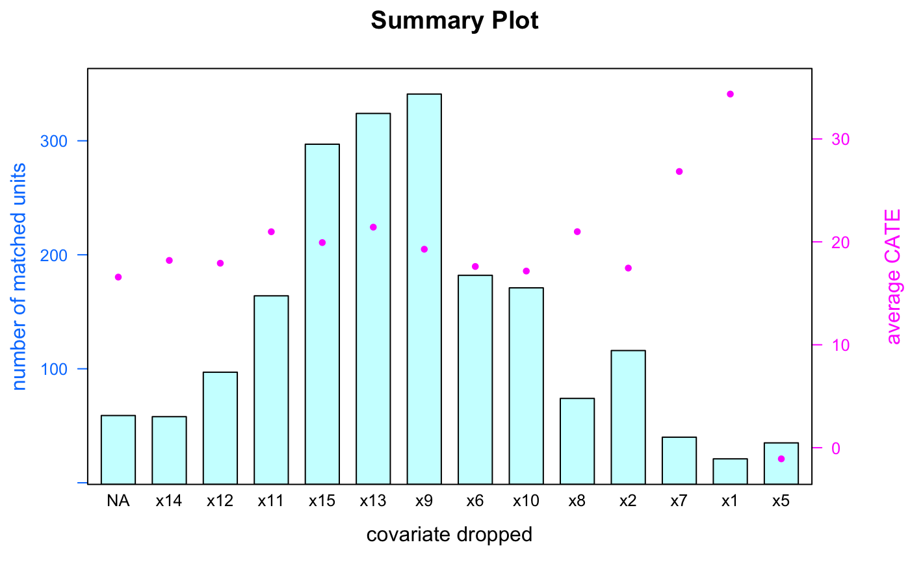
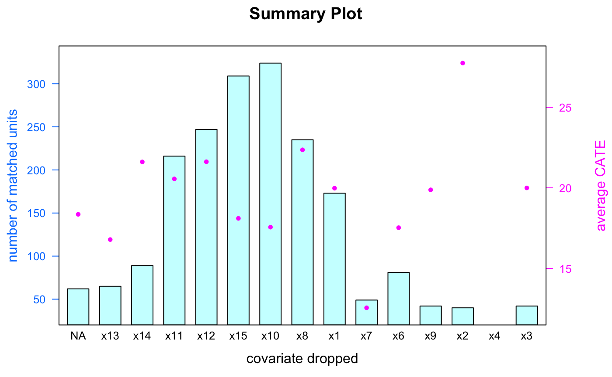

vignettes/Synthetic_Data.Rmd
Synthetic_Data.Rmdlibrary(FLAME)
library(RSQLite)
library(RPostgreSQL)
#> Loading required package: DBI
library(reticulate)
library(latticeExtra)
#> Loading required package: lattice
#> Loading required package: RColorBrewerData_Generation function creates simulated data with specific characteristics and known treatment effects. The following function is used to generate synthetic data.
\[ \begin{aligned} & y = \sum_{i}\alpha_{i}x_{i} + T\sum_{i}\beta_{i}x_{i} + T \cdot U \sum_{i=1..5, \gamma = 1...5, \gamma > i} x_{i}x_{\gamma} \end{aligned} \] \(T \in \{0,1\}\) indicates whether an unit is treated or in control. \(\alpha_{i} \sim N(10s, 1)\) with \(s \sim Uniform\{-1,1\}\), \(\beta_{i} \sim N(1.5,0.15)\), and \(U\) represents the coefficient of non-linear term.
Apply Data_Generation function to generate 1000 treated units and 1000 control units, where U = 5 with 10 important covariates and 5 unimportant covariates. Assume holdout training data is the same as input data.
data <- FLAME::Data_Generation(num_control = 1000, num_treated = 1000,
num_cov_dense = 10, num_cov_unimportant = 5, U = 5)
holdout <- data #> x1 x2 x3 x4 x5 x6 x7 x8 x9 x10 x11 x12 x13 x14 x15 outcome treated
#> 1 1 0 0 0 0 1 1 1 0 0 1 1 0 0 0 -25.326354 0
#> 2 1 1 1 1 0 0 0 1 0 1 0 1 1 1 0 5.172278 0
#> 3 1 0 0 0 0 1 1 0 1 0 1 0 1 1 0 -11.501727 0
#> 4 0 0 0 1 1 0 1 1 1 1 0 0 1 1 0 8.840892 0
#> 5 1 1 1 0 1 1 0 0 0 0 1 0 0 0 1 3.435872 0
#> 6 0 1 0 0 1 0 0 0 1 1 1 0 1 1 1 20.460055 0One of the input requirement for FLAME_bit implementation is a list specifying the number of level each covariate has. For example, the data generation function generates 15 covariates, where each covariate has 2 level (binary variable). Therefore, the input requirement for covs_max_list list should be as below.
covs_max_list = rep(2,15)
covs_max_list
#> [1] 2 2 2 2 2 2 2 2 2 2 2 2 2 2 2Run FLAME_bit function with the following command. The output contains two elements (1) list of covariates used for matching at each iteration (2) list of dataframe showing all matched units, size of each matched group, and its conditional average treatment effect (CATE).
result_bit <- FLAME::FLAME_bit(data = data, holdout = holdout, num_covs = 15, covs_max_list = covs_max_list)For database systems implementation, FLAME package provides two versions - SQLite and PostgreSQL. PostgreSQL version requires installmenet of external database system and has faster implementation. SQLite version does not require external database system but its implementation is slower than the PostgreSQL version.
If your computer does not have PostgreSQL installed, install from here. For connecting and setup of PostgreSQL server, please refer to tutorial.
Connect to PostgreSQL in R and run FLAME_PostgreSQL function with the following command. Note that it is required to name the connection as db, and disconnect it once done. The output contains two elements (1) list of covariates used for matching at each iteration (2) list of dataframe showing all matched units, size of each matched group, and its conditional average treatment effect (CATE).
#Connect to PostgreSQL
drv <- dbDriver('PostgreSQL')
#Name the connection as db
db <- dbConnect(drv, user="postgres", dbname="FLAME", host='localhost',
port=5432, password = 'new_password')
#Run FLAME_PostgreSQL
result_PostgreSQL <- FLAME::FLAME_PostgreSQL(db = db, data = data, holdout = holdout, num_covs = 15)
#Disconnect from db
dbDisconnect(db)Connect to a temporary database in R and run FLAME_SQLite function with the following command. Note that it is required to name the connection as db. The output contains two elements (1) list of covariates used for matching at each iteration (2) list of dataframe showing all matched units, size of each matched group, and its conditional average treatment effect (CATE).
#Name the connection as conn
db <- dbConnect(SQLite(),"tempdb")
#Run FLAME_SQLite
result_SQLite <- FLAME::FLAME_SQLite(db = db, data = data, holdout = holdout, num_covs = 15)
#Disconnect from db
dbDisconnect(db)We compare the results of bit vectors, PostgreSQL, and SQLite implementations, where all three yield the same outcomes.
CATE function to see details of all matched units, including the size and CATE of each matched group. Note that if no units are matched, CATE will return nothing.head(FLAME::CATE(FLAME_object = result_bit, num_covs = 8)) #bit vectors
#> x1 x2 x3 x4 x5 x6 x7 x9 effect size
#> 1 0 0 0 1 0 1 0 0 -0.5776111 3
#> 2 0 0 1 0 0 0 1 0 0.8006740 8
#> 3 0 0 0 1 0 1 1 0 2.4382442 2
#> 4 0 1 1 0 0 0 0 0 3.9943531 4
#> 5 0 1 0 0 1 0 0 0 4.0817665 5
#> 6 0 1 1 0 0 1 0 0 5.5163183 3
head(FLAME::CATE(FLAME_object = result_PostgreSQL, num_covs = 8)) #PostgreSQL
#> x1 x2 x3 x4 x5 x6 x7 x9 effect size
#> 1 0 0 0 1 0 1 0 0 -0.5776111 3
#> 2 0 0 1 0 0 0 1 0 0.8006740 8
#> 3 0 0 0 1 0 1 1 0 2.4382442 2
#> 4 0 1 1 0 0 0 0 0 3.9943531 4
#> 5 0 1 0 0 1 0 0 0 4.0817665 5
#> 6 0 1 1 0 0 1 0 0 5.5163183 3
head(FLAME::CATE(FLAME_object = result_SQLite, num_covs = 8)) #SQLite
#> x1 x2 x3 x4 x5 x6 x7 x9 effect size
#> 1 0 0 0 1 0 1 0 0 -0.5776111 3
#> 2 0 0 1 0 0 0 1 0 0.8006740 8
#> 3 0 0 0 1 0 1 1 0 2.4382442 2
#> 4 0 1 1 0 0 0 0 0 3.9943531 4
#> 5 0 1 0 0 1 0 0 0 4.0817665 5
#> 6 0 1 1 0 0 1 0 0 5.5163183 3#> x1 x2 x3 x4 x5 x6 x7 x9
#> 0 0 0 1 0 1 0 0If we would like to see which the CATE and size of this covariate combination, apply CATE function by providing (1) number of covaraites (num_covs), (2) names of covariates (cov_name), and (3) corresponding values (cov_val).
FLAME::CATE(FLAME_object = result_bit, num_covs = 8, cov_name = cov_name,
cov_val = cov_val)
#> x1 x2 x3 x4 x5 x6 x7 x9 effect size
#> 1 0 0 0 1 0 1 0 0 -0.5776111 3CATE function to outputall possible matches. The input requirements are the same as (b), but num_covs argument should not be specified.CATE_object <- CATE(FLAME_object = result_bit, cov_name = c("x2", "x3", "x5"), cov_val = c(1, 0, 1))
CATE_object
#> [[1]]
#> x1 x2 x3 x4 x5 x6 x7 x8 x9 x10 x11 x12 x13 x14 x15 effect size
#> 25 1 1 0 1 1 0 0 1 0 1 1 0 0 0 1 38.43478 2
#> 27 1 1 0 1 1 1 1 1 0 1 1 0 1 0 0 41.25151 2
#>
#> [[2]]
#> x1 x2 x3 x4 x5 x6 x7 x8 x9 x10 x11 x12 x14 x15 effect size
#> 29 1 1 0 1 1 1 0 0 0 0 1 1 1 0 37.11590 2
#> 30 1 1 0 1 1 0 0 1 0 1 0 0 0 0 38.43478 2
#>
#> [[3]]
#> x1 x2 x3 x4 x5 x6 x7 x8 x9 x10 x11 x12 x15 effect size
#> 9 0 1 0 0 1 0 0 1 0 1 1 0 0 10.57548 2
#> 22 1 1 0 0 1 0 0 1 0 1 0 1 1 21.88148 2
#> 25 0 1 0 1 1 0 1 0 1 0 1 1 1 22.17912 2
#> 28 1 1 0 0 1 1 0 0 1 1 1 1 0 23.56991 2
#> 33 0 1 0 1 1 0 1 1 1 1 0 0 0 25.01995 2
#> 36 1 1 0 1 1 0 0 0 0 1 0 1 1 37.00483 2
#>
#> [[4]]
#> x1 x2 x3 x4 x5 x6 x7 x8 x9 x10 x12 x15 effect size
#> 27 0 1 0 0 1 0 0 1 0 1 0 1 10.57548 3
#> 29 0 1 0 0 1 1 0 0 1 0 1 1 10.85301 2
#> 32 0 1 0 0 1 0 1 0 1 1 1 1 12.03671 3
#> 44 0 1 0 0 1 1 1 1 1 0 1 0 13.57773 2
#> 51 0 1 0 1 1 0 0 0 0 0 1 0 19.28794 2
#> 64 0 1 0 1 1 0 1 1 0 1 0 0 23.42355 3
#> 68 1 1 0 0 1 1 0 1 1 0 0 1 23.58895 2
#> 69 1 1 0 0 1 1 0 1 1 0 1 1 23.58895 2
#> 72 0 1 0 1 1 1 0 1 0 1 1 1 23.65074 2
#> 78 1 1 0 0 1 1 1 1 1 0 0 0 24.88372 2
#> 80 0 1 0 1 1 1 1 1 1 1 1 1 26.54192 2
#> 82 1 1 0 1 1 0 0 0 1 0 1 0 37.19035 2
#> 84 1 1 0 1 1 0 1 0 1 0 1 1 38.48512 2
#> 85 1 1 0 1 1 1 0 1 0 0 0 0 38.54585 2
#> 91 1 1 0 1 1 1 1 1 0 0 1 1 39.84062 2
#> 97 1 1 0 1 1 1 1 0 1 1 0 0 41.41798 2
#>
#> [[5]]
#> x1 x2 x3 x4 x5 x6 x7 x8 x9 x10 x15 effect size
#> 24 0 1 0 0 1 1 0 0 0 1 0 10.66750 2
#> 25 0 1 0 0 1 0 0 0 1 1 1 10.74194 2
#> 34 0 1 0 0 1 0 1 1 0 1 0 11.87025 3
#> 36 0 1 0 0 1 1 1 1 0 0 1 11.98132 2
#> 41 0 1 0 0 1 1 0 1 1 0 1 12.28295 2
#> 54 1 1 0 0 1 0 1 0 0 1 0 21.74631 3
#> 55 1 1 0 0 1 1 1 0 0 0 0 21.85738 2
#> 57 0 1 0 1 1 0 0 1 0 1 0 22.12878 2
#> 59 0 1 0 1 1 1 0 0 0 1 0 22.22080 2
#> 61 0 1 0 1 1 0 0 0 1 1 0 22.29524 2
#> 62 0 1 0 1 1 1 0 0 1 0 1 22.40631 2
#> 64 1 1 0 0 1 0 1 1 0 1 1 23.17625 2
#> 65 1 1 0 0 1 0 1 0 1 1 0 23.34271 2
#> 66 1 1 0 0 1 0 1 0 1 1 1 23.34271 2
#> 89 1 1 0 1 1 0 0 1 0 0 1 37.02388 2
#> 99 1 1 0 1 1 1 0 1 1 0 1 40.14225 2
#> 101 1 1 0 1 1 0 1 1 1 1 0 41.32595 2
#>
#> [[6]]
#> x1 x2 x3 x4 x5 x6 x7 x8 x9 x10 effect size
#> 42 0 1 0 0 1 0 1 0 0 1 10.44031 2
#> 43 0 1 0 0 1 1 1 0 0 0 10.55138 2
#> 44 0 1 0 0 1 1 0 1 0 0 10.68655 2
#> 45 0 1 0 0 1 0 0 1 1 0 10.76099 2
#> 59 0 1 0 0 1 1 1 0 0 1 11.96227 2
#> 70 0 1 0 0 1 1 0 1 1 1 13.69385 2
#> 75 1 1 0 0 1 0 0 0 0 0 19.04064 2
#> 91 1 1 0 0 1 1 0 1 0 1 23.40344 4
#> 93 0 1 0 1 1 1 1 1 0 0 23.53462 2
#> 99 0 1 0 1 1 1 1 0 1 0 23.70108 3
#> 100 0 1 0 1 1 0 0 1 1 1 23.72518 4
#> 106 1 1 0 1 1 1 0 0 0 0 37.11590 2
#> 108 1 1 0 1 1 0 1 1 0 0 38.31865 2
#> 112 1 1 0 1 1 1 0 1 0 0 38.54585 2
#> 115 1 1 0 1 1 1 1 0 0 1 39.82157 2
#> 116 1 1 0 1 1 1 0 1 0 1 39.95674 3
#> 117 1 1 0 1 1 1 1 0 1 0 40.00708 2
#> 119 1 1 0 1 1 0 0 1 1 1 40.03118 4
#>
#> [[7]]
#> x1 x2 x3 x4 x5 x6 x7 x8 x9 effect size
#> 29 0 1 0 0 1 1 0 0 0 8.636228 3
#> 43 0 1 0 0 1 0 1 1 0 12.490627 3
#> 44 0 1 0 0 1 0 1 0 1 12.657093 4
#> 49 0 1 0 0 1 1 0 0 1 12.884288 3
#> 60 0 1 0 0 1 1 1 1 1 15.609000 2
#> 72 1 1 0 0 1 0 1 0 0 22.366685 2
#> 73 1 1 0 0 1 0 1 1 1 22.741380 2
#> 75 0 1 0 1 1 1 0 0 0 22.841179 3
#> 87 0 1 0 1 1 1 0 1 1 25.867528 3
#> 97 1 1 0 1 1 1 0 1 1 39.521874 5
#> 103 1 1 0 1 1 0 1 1 1 41.946332 3
#>
#> [[8]]
#> x1 x2 x3 x4 x5 x6 x7 x9 effect size
#> 5 0 1 0 0 1 0 0 0 4.081766 5
#> 11 0 1 0 0 1 0 0 1 7.709448 6
#> 20 1 1 0 0 1 0 0 0 15.077576 2
#> 29 1 1 0 0 1 1 0 0 17.219920 5
#> 30 0 1 0 1 1 0 0 1 17.386567 6
#> 38 0 1 0 1 1 1 1 0 26.256923 3
#> 42 0 1 0 1 1 0 1 1 27.860319 7
#> 48 1 1 0 1 1 0 0 0 40.366565 4
#>
#> [[9]]
#> x2 x3 x4 x5 x6 x7 x9 effect size
#> 10 1 0 0 1 0 1 1 11.27354 3
#> 22 1 0 0 1 1 0 1 23.18119 4
#> 26 1 0 1 1 1 1 1 27.30790 5
#> 29 1 0 1 1 1 0 1 34.72190 3
#> 30 1 0 1 1 0 1 0 36.52045 4
#> 32 1 0 1 1 1 0 0 39.61921 3
#>
#> [[10]]
#> x2 x3 x4 x5 x9 effect size
#> 2 1 0 0 1 1 7.880654 11
#> 3 1 0 0 1 0 10.494521 15CATE_plot to visualize CATE of all matched groups in boxplot.CATE_plot(CATE_object)
CATE_AVG to compute average CATE. Note that average CATE is the weighted average of all matched groups.CATE_AVG(CATE_object)
#> [1] 22.57365The following is a specific covariate combination when eight covariates are used for matching.
#> x1 x2 x3 x4 x5 x6 x7 x9 effect size
#> 1 0 0 0 1 0 1 0 0 -0.5776111 3If we would like to see all units given this specific covariate combination, apply the following comand.
FLAME::MATCH(FLAME_object = result_bit, cov_name = cov_name, cov_val = cov_val)
#> x1 x2 x3 x4 x5 x6 x7 x8 x9 x10 x11 x12 x13 x14 x15 outcome treated
#> 1 0 0 0 1 0 1 0 0 0 0 1 1 1 0 0 -6.491438 0
#> 2 0 0 0 1 0 1 0 0 0 1 1 0 0 1 0 -5.871060 0
#> 3 0 0 0 1 0 1 0 1 0 0 0 1 0 0 1 -6.758860 1Apply summary_plot function to visualize matching process, including covariate dropped, total number of matched units, and average CATE at each iteration. Note that nothing is dropped in the beginning since all covariates are used for matching. It is represented by NA in the covariate dropped axis.
FLAME::summary_plot(result_bit)